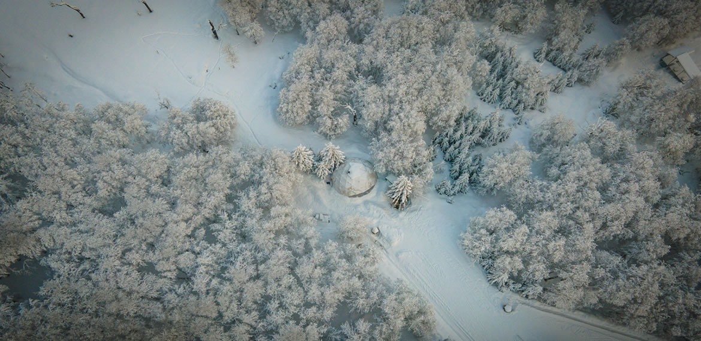
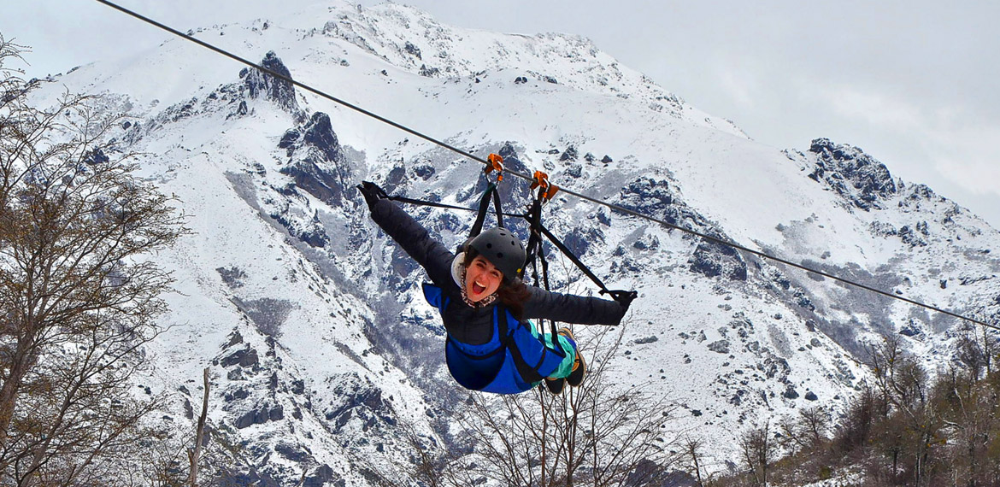
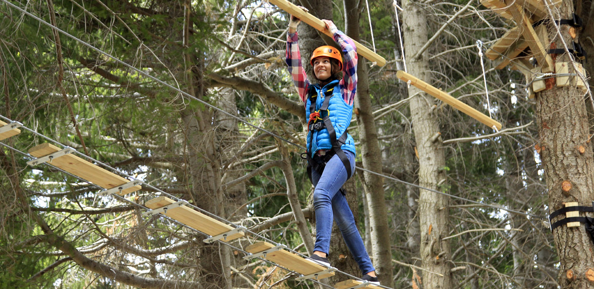
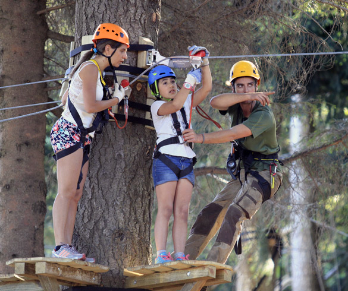
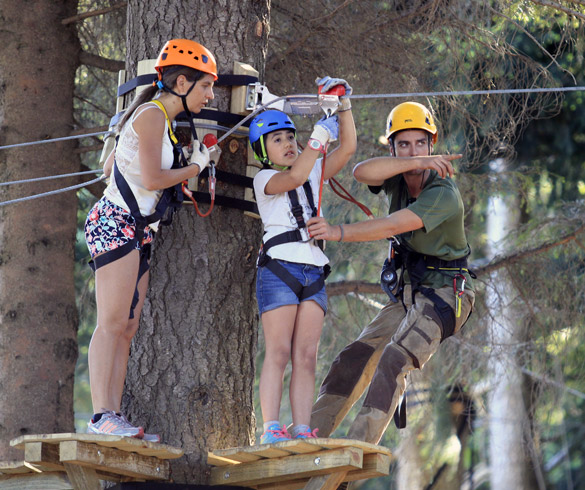

Cerro Otto
En la cima de la diversión
Este cerro posee un camino principal y numerosos senderos de montaña para practicar mountain bike y senderismo de corto recorrido. Es posible acceder a la cima mediante un camino para vehículos o mediante un teleférico que parte desde su base. En las zonas superiores de la montaña encontrarás, durante el invierno, pistas para la práctica de esquí nórdico y otras para esquí andino.
La base del complejo se encuentra a sólo 5 kilómetros del centro de la ciudad. Para subir se utiliza el ya legendario teleférico, un atractivo medio de elevación compuesto por 42 góndolas panorámicas con capacidad para 4 pasajeros cada una. El mismo va desde la Estación Inferior, en la base del cerro, hasta la Estación Superior, recorriendo una distancia de 2100 metros. ¡Es una experiencia que no te podés perder!
En la cima, a 1405 metros sobre el nivel del mar, se encuentra la famosa confitería giratoria, única en el país. Con una estructura vidriada en toda su circunferencia, gira en un radio de 360° y, en 20 minutos, te permite observar todo el paisaje circundante mientras disfrutás de un rico chocolate caliente acompañado de una variedad de delicias regionales.
La vista desde la cima del cerro Otto es extraordinaria: hacia el norte se divisa la ciudad de Bariloche y el lago Nahuel Huapi. Hacia el este se pueden observar los cerros Leones y Villegas, y parte de la estepa patagónica. Al sur podrás ver el lago Gutiérrez y otros cerros cercanos; y hacia el oeste, están el cerro Catedral, el lago Moreno y la cordillera de los Andes.
Luego de contemplar estas obras de arte creadas por la naturaleza, también podrás admirar las obras creadas por el hombre. En la cima del cerro se puede visitar una galería de arte que expone en forma permanente réplicas de las tres obras más importantes de Miguel Ángel Buonarroti: el David, la Piedad y el Moisés. Los alrededores del lugar son recomendables para realizar caminatas por el bosque o disfrutar de distintas actividades en la nieve durante la temporada invernal.
Para llegar hasta el Complejo Teleférico Cerro Otto se ofrecen traslados desde el centro de la ciudad que están incluidos en la tarifa del ascenso.
| Ficha Tecnica | |
|---|---|
| Recorrido | Aproximadamente 10 km desde el centro de la ciudad y 40 km desde la zona del hotel Llao Llao (ida y vuelta). |
| Duración | Generalmente son necesarias unas 3 ó 4 horas, pero si se suman las diferentes propuestas de este sector del cerro, puede extenderse por algunas horas más. |
| Período | Anual, salvo algunas semanas del mes de mayo en las que estas instalaciones pueden permanecer cerradas por tareas de mantenimiento. |
Las condiciones del clima invernal pueden generar algunas demoras en el acceso
Winter Park
Este centro de ski está situado a 6 km de la ciudad en el complejo Piedras Blancas. Ofrece clases de ski para todas las edades en un ambienta familiar y seguro.
Tiene tres pistas de ski con diferentes niveles de dificultad y tambien ofrece la opcion de caminata con raquetas para quienes prefieran una actividad diferente.
Por la noche el complejo ofrece tambien la posibilidad de disfrutar tanto del ski como de una caminata con raquetas, y acompañar la actividad con musica en vivo y cocina de fuegos.
| Ficha Tecnica | |
|---|---|
| Recorrido | Aproximadamente 15 km saliendo desde el centro de la ciudad de Bariloche y 60 km desde la zona del hotel Llao Llao (ida y vuelta). |
| Duración | Las actividades ofrecidas por las agencias habilitadas pueden durar unas 4 horas |
| Período | Abierto solamente durante los meses de invierno |
Piedras Blancas
Es la cuna del esquí en Argentina. Sus laderas fueron utilizadas por los primeros deportistas del deporte blanco. Cuentan las crónicas que por esos años se ascendía caminando y se podía descender esquiando hasta el centro mismo de la ciudad de Bariloche.
Las aerosillas te llevan hasta el inicio de las pistas, para luego descender desde allí utilizando trineos. También hay clases de esquí para principiantes, una confitería y majestuosas vistas de los lagos Nahuel Huapi y Gutiérrez.
El zipline es una novedosa y divertida actividad, que te permitirá sobrevolar los bosques durante todo el año.
Además, se puede realizar un safari fotográfico para descubrir paisajes increíbles, una actividad ideal para compartir en familia.
El traslado desde el centro de la ciudad puede realizarse a través de agencias de viajes habilitadas, en taxi, remis, o bien con vehículo particular.
| Ficha Tecnica | |
|---|---|
| Recorrido | Aproximadamente 15 km en total, saliendo desde el centro de la ciudad de Bariloche, y aproximadamente 60 km desde la zona del hotel Llao Llao (ida y vuelta). |
| Duración | Las excursiones ofrecidas por las agencias habilitadas pueden durar unas 4 horas, pero si se suman las diferentes actividades, puede extenderse por algunas horas más. |
| Período | Se encuentra habilitado todo el año, presentando diferentes propuestas de acuerdo a la temporada. |
La actividad que se realiza en este sector implica ascensos en aerosillas y descensos con trineos que pueden alcanzar una velocidad considerable. Por otro lado, las condiciones del clima invernal pueden generar algunas dificultades en el camino de acceso, debido a la acumulación de nieve o hielo.
EUCA
Una experiencia con vistas panorámicas únicas, al aire libre y en constante movimiento.
Parque de Juegos en altura. En familia o con amigos, vas a jugar y trepar a los árboles, como cuando eras chico. Este parque aéreo posee 5 niveles y 60 juegos, incluyendo puentes colgantes, redes, círculos de acero, tubos circulares de madera, tirolesas. Una propuesta diferente para chicos y grandes, para amigos y familias, estudiantes, grupos y para empresas.
 

| Ficha Tecnica | |
|---|---|
| Recorrido | Aproximadamente 15 km saliendo desde el centro de la ciudad de Bariloche y 60 km desde la zona del hotel Llao Llao (ida y vuelta). |
| Duración | 3 hrs |
| Período | Enero, Febrero y vacaciones de Invierno: todos los días de 10 a 20 hrs Temporada baja: Jueves, Viernes, Sábado, Domingo y feriados de 10 a 17:30 hrs |
Refugio Berghof
Es otra de las atracciones del cerro Otto. El traslado puede realizarse en vehículos particulares, o bien se puede realizar el ascenso a pie, por el camino vehicular, que se inicia en el km 1 de la avenida de los Pioneros.
Desde el refugio se puede visitar el pequeño Museo del Esquí, ubicado en lo que fuera la casa de Otto Meiling, pionero del esquí y del montañismo en la ciudad. Durante algunas noches de la semana, el refugio ofrece cenas con shows musicales. Para este servicio se ofrecen traslados desde la ciudad.
| Ficha Tecnica | |
|---|---|
| Recorrido | 10 km en total desde el centro de la ciudad de Bariloche, y aproximadamente 55 km desde la zona del hotel Llao Llao (ida y vuelta). |
| Duración | No se ofrecen excursiones a través de agencias habilitadas. Se necesitan unas 3 a 4 horas para llegar. |
| Período | Abierto todo el año. |
Las condiciones del clima invernal pueden generar algunas demoras en el acceso.
Centro de Esquí Nórdico
Este sector del cerro Otto ofrece todo tipo de actividades para hacer en la nieve: paseos en cuatriciclos con orugas, motos de nieve, caminatas con raquetas y mucho más. Sin lugar a dudas la gran protagonista es la práctica del esquí nórdico. Esta modalidad ofrece la posibilidad de deslizarse en cualquier tipo de terreno (plano, en bajadas o subidas y a través del bosque).
Se pueden tomar clases y alquilar de equipos. Hay un refugio donde se pueden degustar exquisitos platos regionales. Durante la noche, existe un servicio combinado de paseo en cuatriciclos biplaza con orugas y una cena con platos típicos. Este servicio incluye traslados desde el centro de Bariloche.
| Ficha Tecnica | |
|---|---|
| Recorrido | 10 km en total desde el centro de la ciudad de Bariloche, y aproximadamente 55 km desde la zona del hotel Llao Llao (ida y vuelta). |
| Duración | Las excursiones que se ofrecen en las agencias habilitadas tienen distintas duraciones, de acuerdo a las actividades que se contraten. Se estima que la duración puede ir desde las 4 ó 5 horas hasta 7 u 8 horas para el caso del día de esquí nórdico. |
| Período | Abierto solamente durante los meses de invierno. |